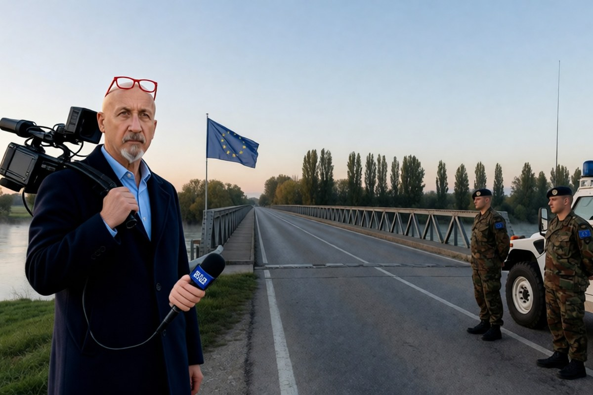

Geopolitica · 31 ottobre 2026
L'Onu rinnova Eufor in Bosnia il giorno dopo i quattro morti di Brcko

Quindici voti su quindici, Russia compresa, per tenere i soldati europei in Bosnia un altro anno. Lo scontro vero, al Consiglio di sicurezza, è sull'ufficio dell'Alto rappresentante, che da mesi non ha una guida piena.
di Franco Zanghì
La Russia, che da anni chiede di chiudere l'ufficio internazionale che vigila sulla pace in Bosnia, ha votato perché i soldati europei restino in quel Paese un altro anno. Le due cose stanno insieme, e il perché spiega in che condizioni si trova la Bosnia oggi.
Brcko, giovedì
Giovedì pomeriggio, alla periferia di Brcko, un elicottero Chinook dell'Esercito italiano è caduto pochi istanti dopo il decollo. A bordo c'erano 15 italiani della missione europea Eufor Althea: 4 sono morti, 11 sono rimasti feriti. Le cause sono ancora da accertare.
Il giorno dopo il Consiglio di sicurezza delle Nazioni Unite si è riunito per il rinnovo annuale della missione. Ha ricordato i 4 italiani e poi ha votato: 15 sì su 15, Eufor resta in Bosnia per altri 12 mesi.
La notizia riguarda l'Italia da vicino. Dal gennaio di quest'anno la missione è comandata da un generale italiano, Maurizio Fronda, ed è la terza volta che la guida è italiana. Eufor è nata alla fine del 2004, quando l'Unione europea ha preso il posto della Nato per far rispettare gli accordi di Dayton che nel 1995 hanno chiuso la guerra; oggi conta circa 1.100 soldati di una ventina di Paesi.
Perché Brcko non è un posto qualunque
A Brcko passa il corridoio della Posavina, largo appena 5 chilometri. È il filo che tiene unite le due metà della Republika Srpska, la parte del Paese dei serbi di Bosnia, ed è l'uscita della Federazione verso la Sava e verso l'Europa. Dopo la guerra nessuna delle due entità è riuscita a prenderselo, e oggi è un distretto a parte, sotto supervisione internazionale. Secondo un'analisi del Centro di studi orientali di Varsavia del 2023, chi controllasse quella striscia di terra avrebbe in mano la chiave di un'eventuale secessione dei serbi di Bosnia.
E di secessione, in Bosnia, si parla. Milorad Dodik, leader dei serbi di Bosnia, l'anno scorso è stato condannato in via definitiva e rimosso dalla presidenza della Republika Srpska per non aver rispettato le decisioni dell'Alto rappresentante. Alle elezioni del 4 ottobre non era candidato, e il suo partito ha vinto di nuovo: l'European Policy Centre ha scritto che il vero vincitore di quel voto è stato proprio lui, che non correva. Al comizio di chiusura, con l'ambasciatore russo in sala, ha detto che la Bosnia «è morta». E il rapporto arrivato all'Onu dall'ufficio dell'Alto rappresentante parla di una «separazione di fatto strisciante» della Republika Srpska dal resto del Paese.
Lo scontro vero
Security Council Report, che segue da vicino i lavori del Consiglio, lo scrive da anni: sui soldati di Eufor sono tutti d'accordo, la lite è sull'Alto rappresentante. L'ambasciatore russo Vasilij Nebenzja ne ha chiesto la chiusura immediata e senza condizioni, chiamandolo un «protettorato esterno». La rappresentante britannica, Sarah MacIntosh, lo ha difeso e ha detto che chi invoca la secessione va contro Dayton. Gli Stati Uniti hanno chiesto ai partiti bosniaci di formare subito i governi e di prendersi loro la responsabilità del Paese.
Quell'ufficio, oggi, è mezzo vuoto. L'Alto rappresentante tedesco Christian Schmidt si è dimesso a maggio; dal 1° luglio al suo posto c'è un facente funzione, l'americano Louis Crishock, che fino a quel giorno era il supervisore internazionale proprio di Brcko. Un successore non c'è. Per Giorgio Fruscione dell'Ispi quelle dimissioni sarebbero il frutto di pressioni americane. E un anno fa, a fine ottobre, Washington ha tolto le sanzioni a Dodik e ai suoi alleati.
A tenere in piedi la Bosnia, oggi, ci sono soldati europei con un comandante italiano, e 4 di loro sono morti giovedì in un addestramento. Intanto l'alleato americano ha tolto le sanzioni all'uomo che dice che la Bosnia non esiste più. Due mani che non vanno nella stessa direzione.
Due cose da seguire: i governi che devono nascere dopo il voto di ottobre e il nome del nuovo Alto rappresentante. Londra lo vuole presto e con tutti i suoi poteri, Mosca vuole chiudere l'ufficio, Washington preferisce che decidano i bosniaci. Se la nomina non arriva, l'ufficio resta nelle mani di un facente funzione che la Russia già oggi dice illegittimo. E a Brcko, a fare la guardia a quei 5 chilometri, restano i soldati europei.
Fonti
- Consiglio di sicurezza dell'Onu, risoluzione 2834 (2026) sul rinnovo di Eufor Althea, 30 ottobre 2026, ripresa da Mirage News
- N1 Bosnia, «Vijece sigurnosti UN-a jednoglasno produzilo mandat Eufor-a, OHR upozorava na puzajuce odvajanje RS-a od BiH», 30 ottobre 2026
- Il Foglio, «Il Chinook caduto in Bosnia. Cosa sappiamo dell'incidente che ha ucciso quattro italiani di Eufor», 30 ottobre 2026
- Security Council Report, «Bosnia and Herzegovina: Debate and EUFOR Althea Reauthorisation», ottobre 2026
- Centre for Eastern Studies di Varsavia, «Changes to the EU's EUFOR Althea operation in Bosnia and Herzegovina», 7 novembre 2023
- European Policy Centre, «Bosnian elections 2026: How Dodik won without running», 12 ottobre 2026
- Ispi, Giorgio Fruscione, «Bosnia: l'Alto Rappresentante si dimette, il paese in balia della geopolitica», 18 maggio 2026
- European Western Balkans, «Louis J. Crishock appointed as the Acting High Representative for BiH», 1° luglio 2026
- Bosna.hr e Klix sul dibattito al Consiglio di sicurezza, 30 ottobre 2026; LaPresse ed Europa Today sul comando del generale Fronda, 30 ottobre 2026
Le cause dello schianto del Chinook sono in accertamento. Il minuto di silenzio in apertura di seduta è riportato da una sola fonte: nel testo si dice soltanto che il Consiglio ha ricordato i quattro italiani.